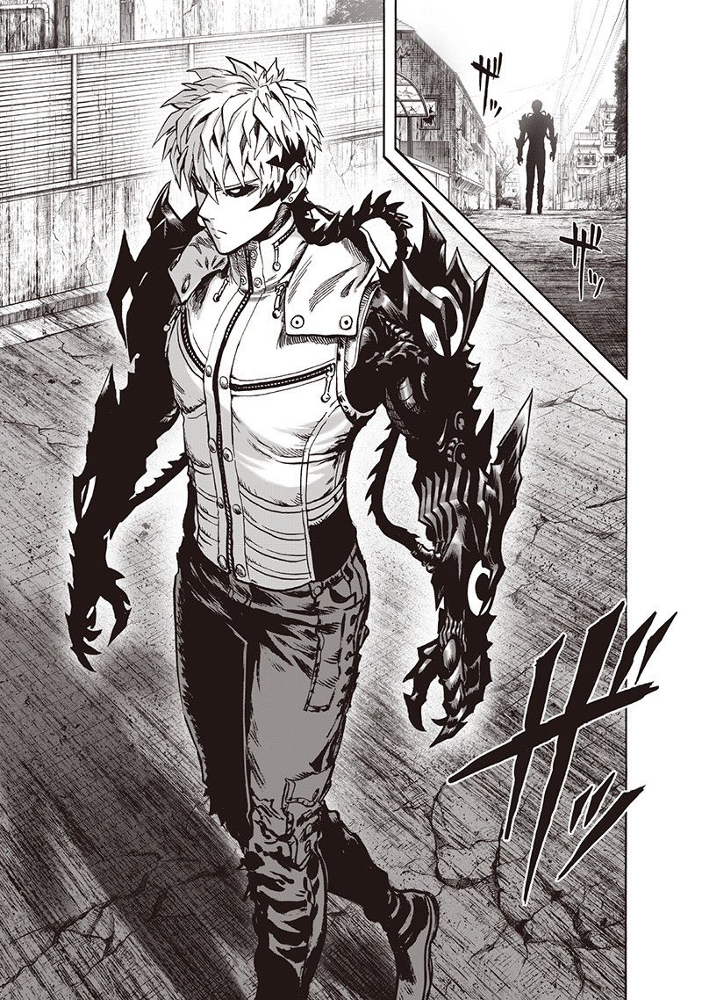
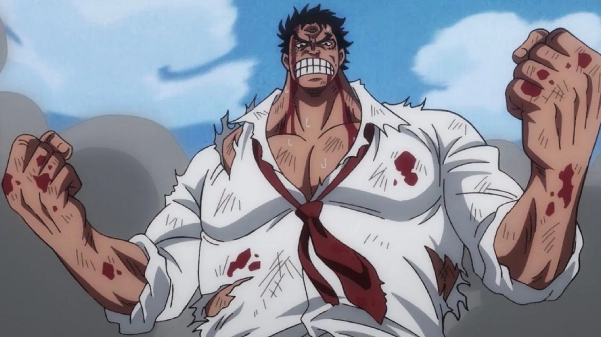

1. Saitama

Saitama is immensely fast and his reflexes are not matched with none on the field or in any universe. He can catch any keep up with any other players movements with ease, track every little direction they shift their body. Saitamas speed allows him to dominate others with overwhelming force and agility.
2. Yoriichi Tsugikuni

His eyes allow nothing to be hidden. Yoriichi can see even the smallest of muscles twitch before they even remotely start firing. He can predict and see when or what actions will be taken by his teammates or his opposing team members. Nothing gets past Yoriichi's eyes, the ball will always be centered on his mind and know exactly how and where it will be at all times based on the smallest bodily twitches from others.
3. Naruto Uzumaki

Like Saitama, one of our faster units. Naruto excels in immense reflexes and speed. He cannot be caught, he cannot be found, but he can find you before you can even blink. Any second you are standing is more time for him to launch a flurry of throws, his speed and flexbility add to his already scary nature of being faster than the eye can blink.
4. Genos
Mostly machine, this man can run countless calculations and simulations in his head in fractions of a second. Every movement, every action, and every decision are carefully watched, recorded, and analyzed by Genos. He makes quick work to think of a successful counterplay or react accordingly to work with his team and for himself.
5. Monkey D. Garp
A true veteran in the art of war, Garp is a trained soldier who shows strong like no other across the universes. His fist throws cannonballs faster than actual cannons fire them, his body though large is surprisingly agile. His imense strength allows himself to dominate on the field, saving both his teammates from strong counter attacks as well as bold and powerful dodges that are hard to hit.